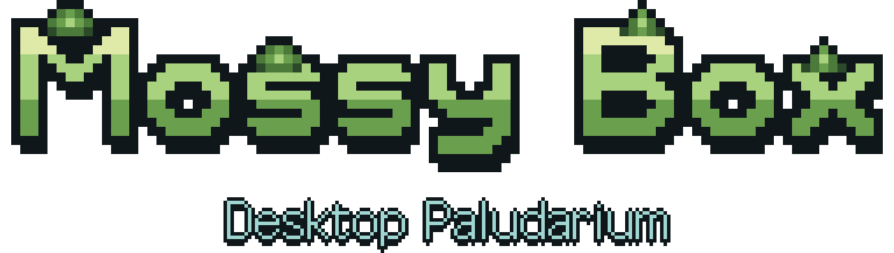
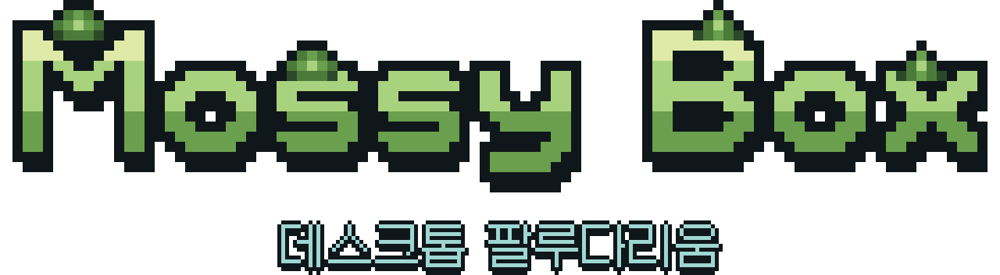
A tiny paludarium that lives at the edge of your screen. Place moss, stones and frogs, and each one joins the music. Water drops, crickets and frogs play gentle songs while you work, study or relax. 화면 가장자리에 사는 작은 팔루다리움. 이끼와 돌, 개구리를 놓으면 저마다 음악에 합류합니다. 물방울과 귀뚜라미, 개구리가 연주하는 잔잔한 곡을 틀어 두고 일하고, 공부하고, 쉬세요.
Screenshots스크린샷
A little green clearing on your desktop바탕화면 위의 작은 초록 숲
Mossy Box is a tiny paludarium, half land and half water, that docks to the side of your screen and plays soft music made by the life inside it. It is made to be listened to, not watched. Mossy Box는 화면 옆에 붙어 있는 작은 팔루다리움입니다. 절반은 땅, 절반은 물인 이 수조 속 생물들이 잔잔한 음악을 연주합니다. 보는 게임이 아니라 듣는 게임입니다.


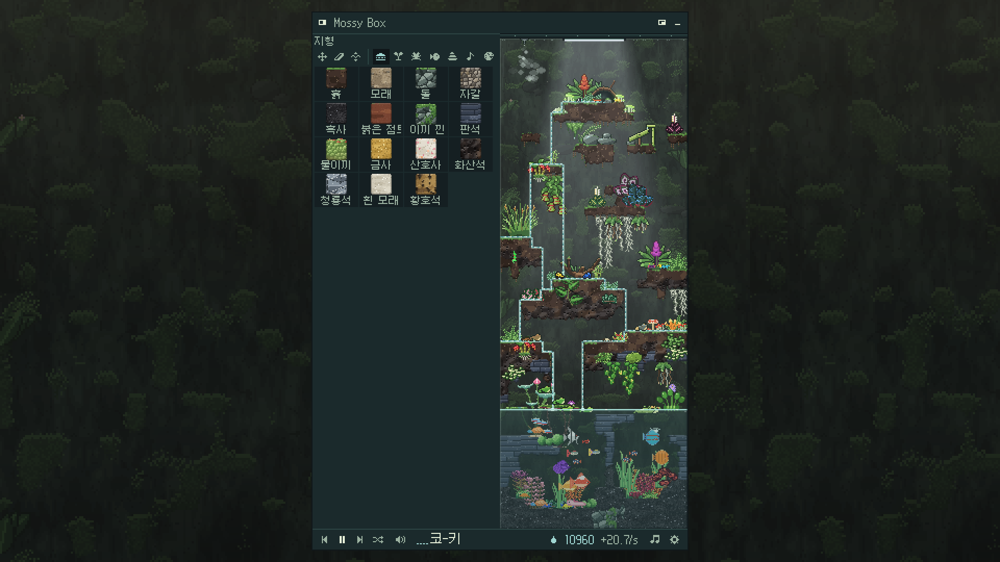

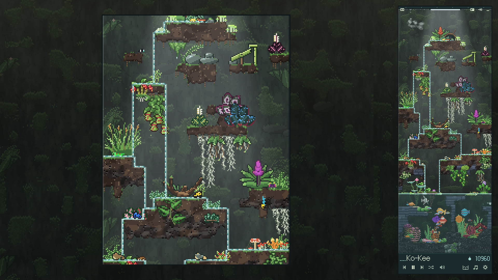

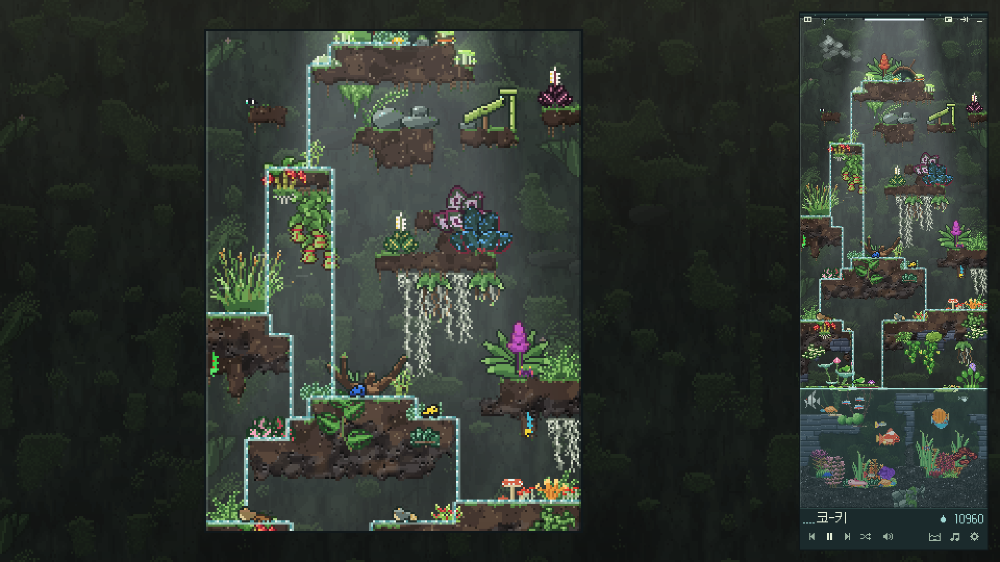

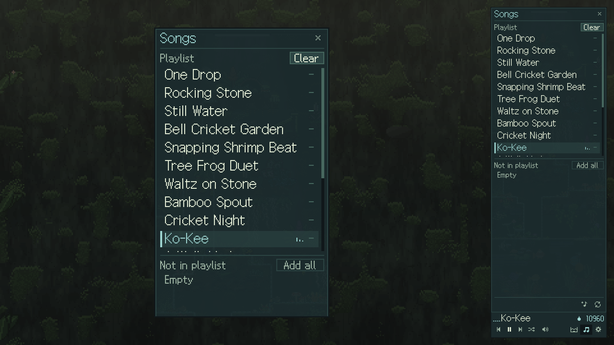

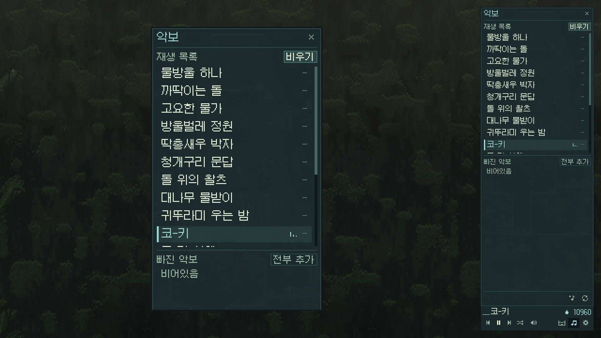

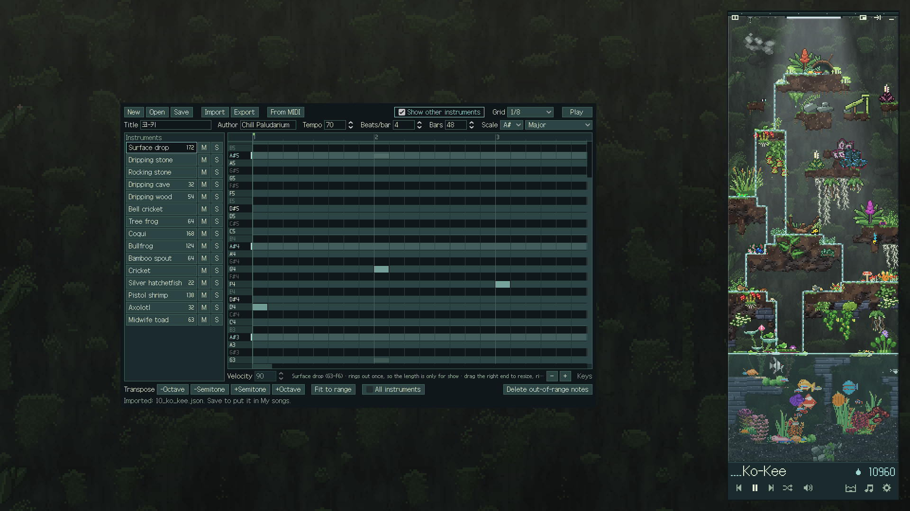

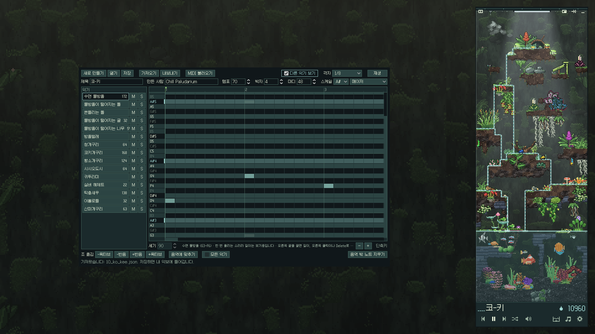


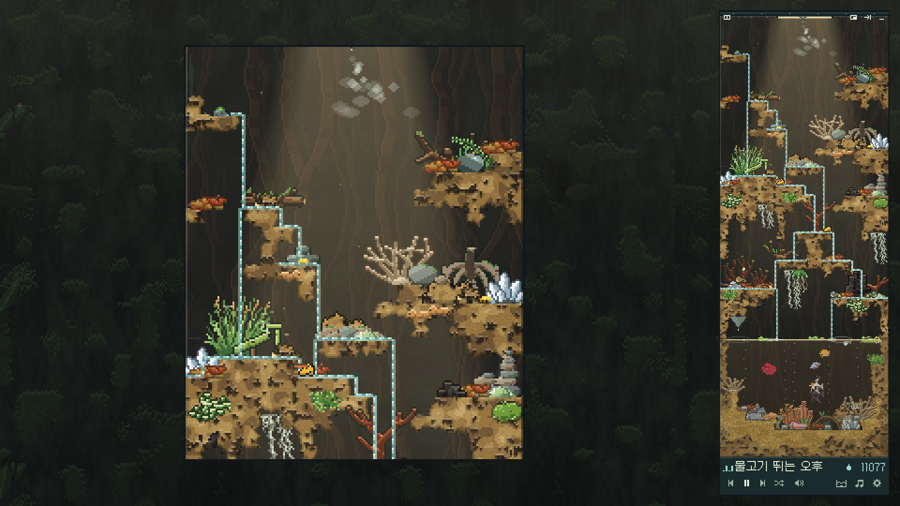

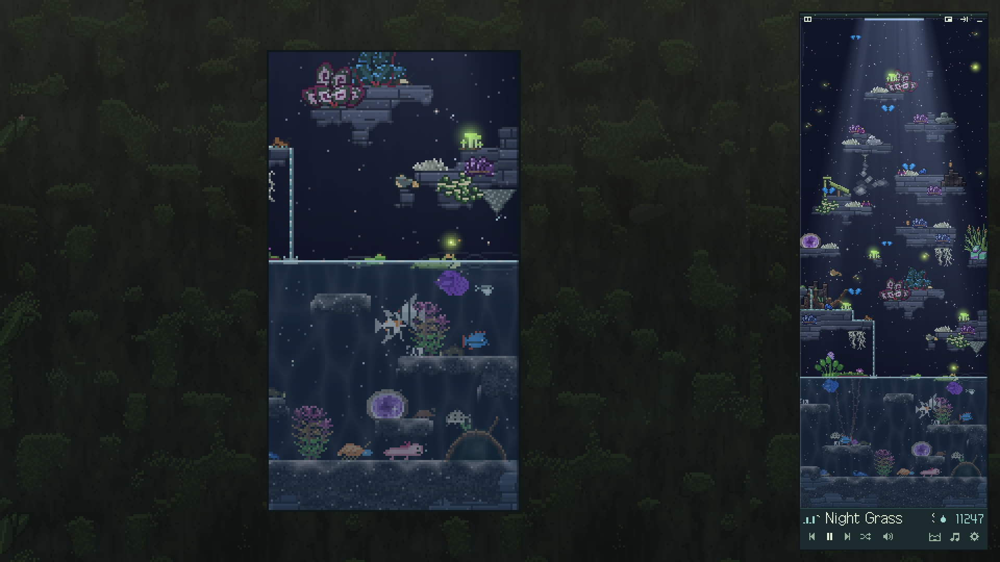

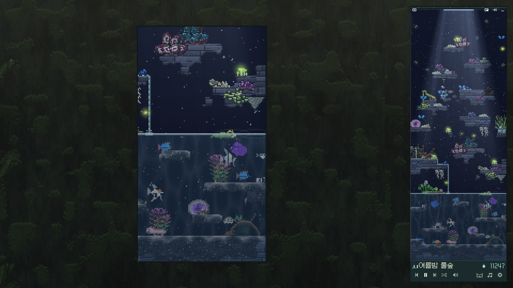
Features특징
Every creature is an instrument모든 생물이 악기
Nature's ensemble자연의 합주
Water drops fall from the moss. A bamboo spout tips and knocks. Tree frogs trill, a coqui calls "ko-kee", a bullfrog hums the bass line and crickets keep the beat. Every song has a part for every instrument, but only the ones in your tank play.
이끼에서 물방울이 떨어지고, 시시오도시가 기울며 "통" 하고 울립니다. 청개구리가 떨리는 소리로 노래하고, 코키개구리가 "코-키" 하고 부르고, 황소개구리가 베이스를 깔고, 귀뚜라미가 박자를 채웁니다. 모든 곡에는 모든 악기의 파트가 있지만, 수조에 있는 악기만 소리를 냅니다.
Build your own paludarium나만의 팔루다리움
- Paint the ground with soil, sand, stone and clay
- Plant moss, ferns, vines, bromeliads and water lilies
- Raise or lower the water and add fish that swim on their own
- Keep up to three tanks in save slots
- 흙, 모래, 돌, 점토로 지형을 칠하세요
- 이끼, 고사리, 덩굴, 브로멜리아드, 수련을 심으세요
- 물 높이를 조절하고 스스로 헤엄치는 물고기를 넣으세요
- 수조를 슬롯 3개에 저장해 두고 바꿔 가며 꾸밀 수 있습니다
Grows while you listen듣는 동안 자라는 수조
While the music plays, your tank gathers dew. Spend it on new instruments, plants, fish and terrain. Unlocking everything takes about twenty hours, and after that Mossy Box stays with you as a quiet music player.
음악이 흐르는 동안 수조에 이슬이 맺힙니다. 이슬로 새 악기, 식물, 물고기, 지형을 들이세요. 전부 해금하는 데 약 20시간이 걸리고, 그 뒤에도 Mossy Box는 조용한 음악 플레이어로 곁에 남습니다.
Write your own songs직접 곡 만들기
A simple built-in editor lets you place notes for each instrument. Share songs as files, load songs others have shared, or bring in a MIDI file one part per instrument.
간단한 내장 편집기로 악기마다 음을 찍을 수 있습니다. 만든 곡을 파일로 공유하고, 남이 공유한 곡을 불러오고, MIDI 파일을 악기마다 파트 하나씩 가져올 수도 있습니다.
Stays out of your way작업을 방해하지 않게
- Reserves its own strip of the screen, like the taskbar
- Dock it to the left or right of any monitor
- Open a wide window, or shrink it to a mini player
- No sudden sounds, no timers, nothing to lose
- 작업 표시줄처럼 화면 한 줄을 차지해 다른 창에 가려지지 않습니다
- 어느 모니터든 왼쪽이나 오른쪽에 붙일 수 있습니다
- 넓은 창으로 펼치거나 미니 플레이어로 줄일 수 있습니다
- 갑자기 큰 소리가 나지 않고, 시간 제한도, 잃을 것도 없습니다
Try the free demo무료 데모
Six instruments, six songs and about fifty minutes of unlocks, and the music keeps playing after that. Your demo progress carries over to the full game.
악기 6종과 곡 6개, 약 50분 분량의 해금을 즐길 수 있고, 그 뒤에도 음악은 계속 흐릅니다. 데모 진행 상황은 정식판으로 이어집니다.
Support고객 지원
Found a bug?버그를 발견하셨나요?
Email yaongisgreat@yaongisgreat.com with what happened and your Windows version. Save files live in %APPDATA%\MossyBox if you need to attach one.
yaongisgreat@yaongisgreat.com으로 어떤 일이 있었는지와 Windows 버전을 보내 주세요. 세이브 파일이 필요하면 %APPDATA%\MossyBox 폴더에 있습니다.